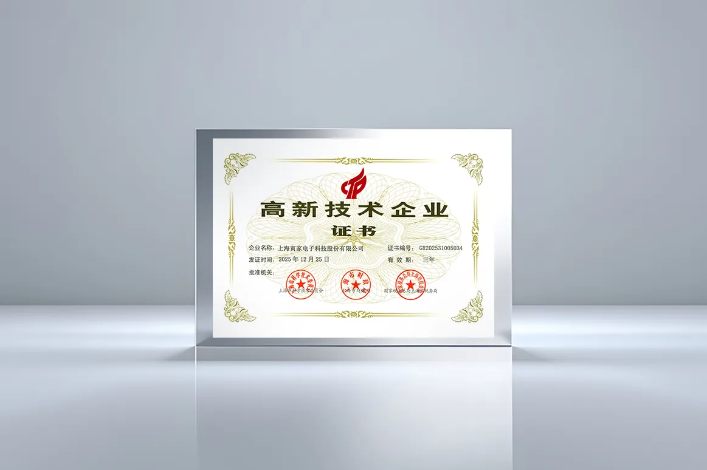

Voyager Tech has recently passed the re-certification for National High-Tech Enterprise status and was again awarded the High-Tech Enterprise Certificate (No. GR202531005034) issued by the Science and Technology Commission of Shanghai Municipality, Shanghai Municipal Finance Bureau, and Shanghai Municipal Tax Service, State Taxation Administration.

The High-Tech Enterprise certification is a key national qualification program established to encourage technological innovation and advance industrial upgrading. It imposes strict assessments on enterprises’ core independent intellectual property, R&D investment, and technology commercialization capabilities, serving as an important benchmark for measuring technological innovation and development potential.
Since its establishment, Voyager Tech has been committed to independent R&D and long-term development, focusing on the R&D and commercial deployment of highly integrated, fully self-developed solutions for ADAS, smart cockpit and intelligent perception, as well as advanced domain controller systems. R&D staff make up nearly one-third of the company’s workforce, and Voyager Tech holds over 200 patents. Voyager Tech has established strategic partnerships with a number of mainstream automakers and industry-chain partners worldwide. Its ADAS, smart cockpit and intelligent perception solutions have been mass-produced and delivered for multiple passenger and commercial vehicle models.
Over the years, Voyager Tech has successively obtained qualifications such as the Shanghai Science and Technology Little Giant Enterprise and Shanghai Specialized and Sophisticated SME, forming a multi-dimensional innovation certification system at national and municipal levels. This successful re-certification confirms that Voyager Tech aligns with national development strategies and boasts stable, sustainable R&D and innovation capabilities.
2021: Shanghai Science and Technology Little Giant Enterprise (Science and Technology Commission of Shanghai Municipality, u200CShanghai Municipal Commission of Economy and Informatization, Shanghai Municipal Finance Bureau)
2022: High-Tech Enterprise Certification (Science and Technology Commission of Shanghai Municipality, Shanghai Municipal Finance Bureau, Shanghai Municipal Tax Service, State Taxation Administration), Certificate No. GR202231004459
2024: Shanghai Specialized and Sophisticated SME (u200CShanghai Municipal Commission of Economy and Informatization)
2024: China "Little Giant" Firms (Ministry of Industry and Information Technology of the People’s Republic of China)